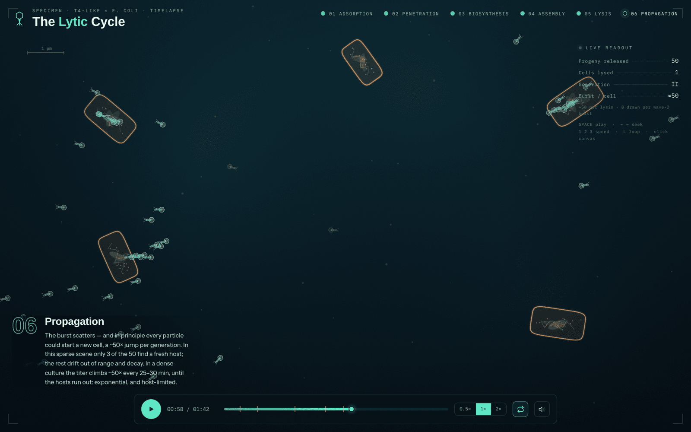
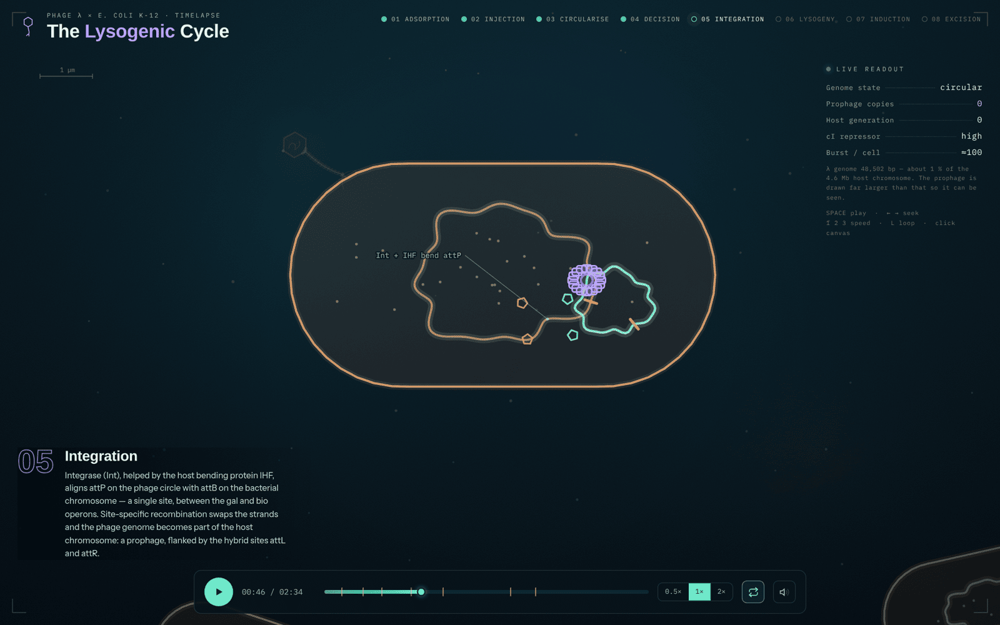

Two animated timelapses of phage infection, each a single self-contained HTML file that runs in any browser. Both are scrubbable and pausable, name the molecules at every step, and say plainly where the picture is not to scale.

Infect, take over, burst. Tail fibers find their receptor, the sheath fires, the host genome is shredded, fifty new particles self-assemble, and lysins open the cell from the inside. Then it happens again, in three more cells.
WATCH
Integrate and wait. The genome circularises on its cos ends, cI beats Cro, integrase stitches the phage into the host chromosome, and the prophage rides four generations of cell division — until UV light cuts the repressor in half.
WATCHSpace or click the canvas to play and pause. ← → to
seek four seconds. 1 2 3 for 0.5×, 1× and 2×.
L toggles looping. The phase names along the top are clickable.
Off by default — the speaker icon in the transport bar turns on a procedural soundtrack built in the Web Audio API. There are no audio files to load.
Download either file and it works offline, straight from the filesystem. Nothing is tracked, nothing phones home, and the only network request is a fonts stylesheet it degrades without. See the README for where each animation simplifies the biology.